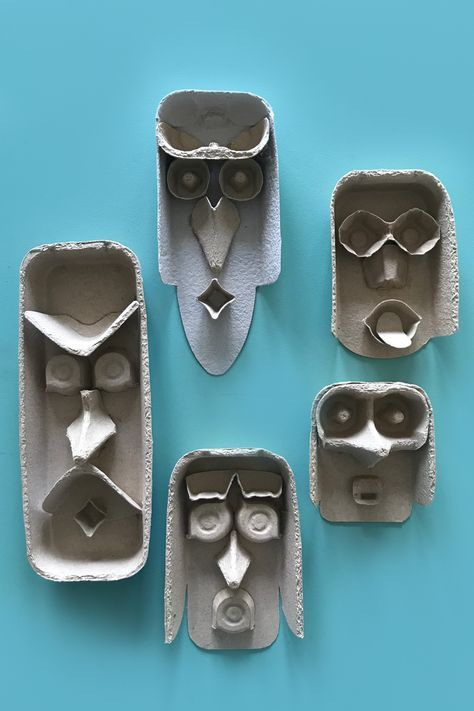
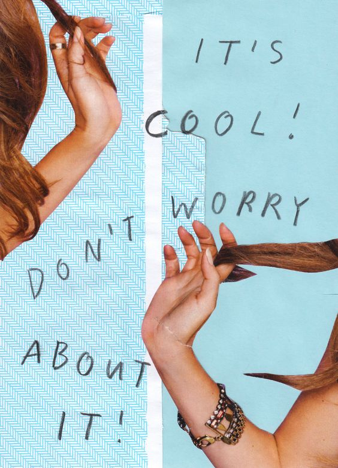
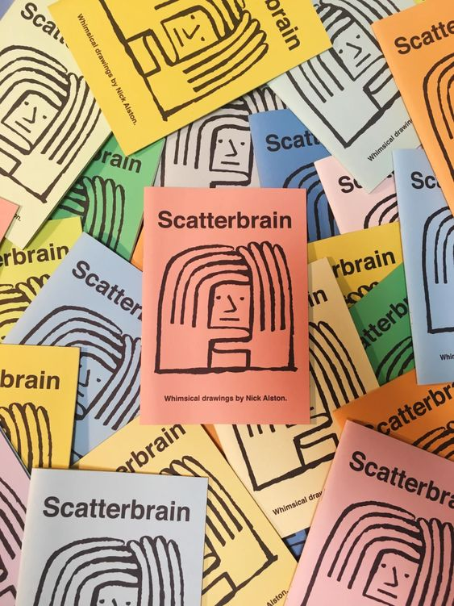

Blog Date:11.2.22

The Difference A Cup Of Tea Can Make
Learn the concepts of #id and .class within CSS + HTML, without spilling your tea
Blog Date: 10.2.22

Only in still waters do things reflect
Reflections - Identity, Value and Strengths
Blog Date: 10.2.22

From a Caterpillar to a Butterfly
My Commitment of how I will evolve from a Caterpillar to become a Coding Butterfly
Blog Date: 14.2.22

I Don't Need to Keep Going to High School
Emotional Intelligence and it's effect on my learning journey
Blog Date: 19.2.22
We are Family, I got all my JavaScript with Me
Family Tree and how my new niece helped me learn JavaScript
Blog Date: 21.2.22
Learn, Code, Rinse, Repeat
How to use Neuroplasticity and Growth Mindset to help on your learning journey
Blog Date: 26.2.22
Thinking outside the Bachs - problem solving
Reflecting on using problem solving techniques and processes
| *LinkedIn* | *Twitter* | *Email* |
|---|---|---|